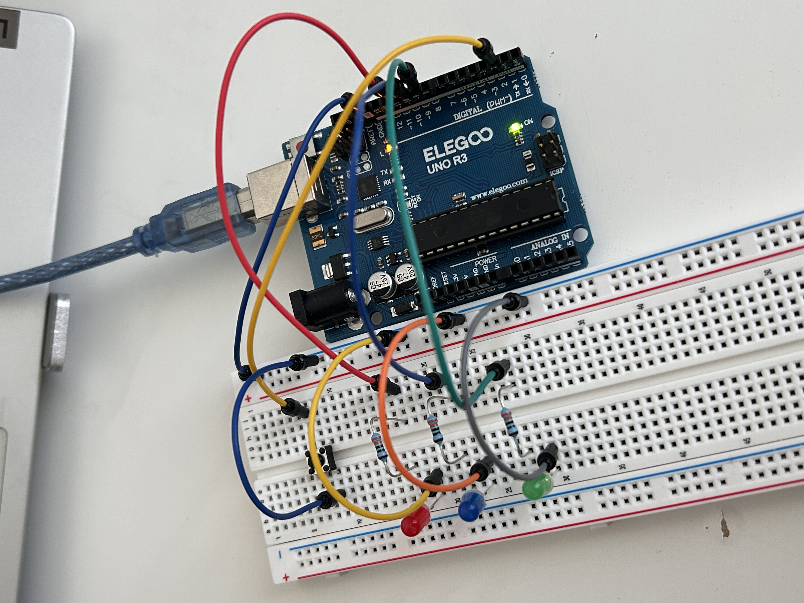
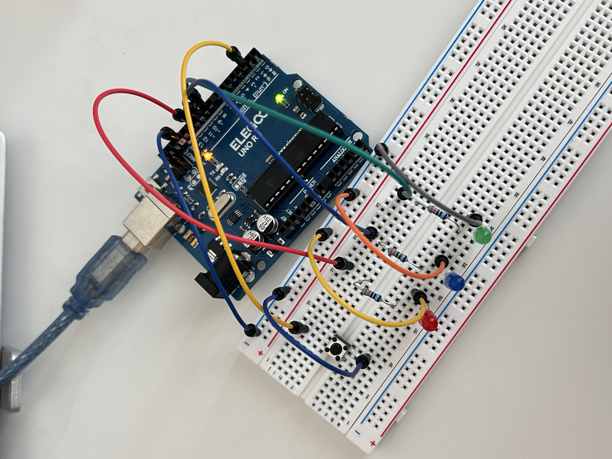
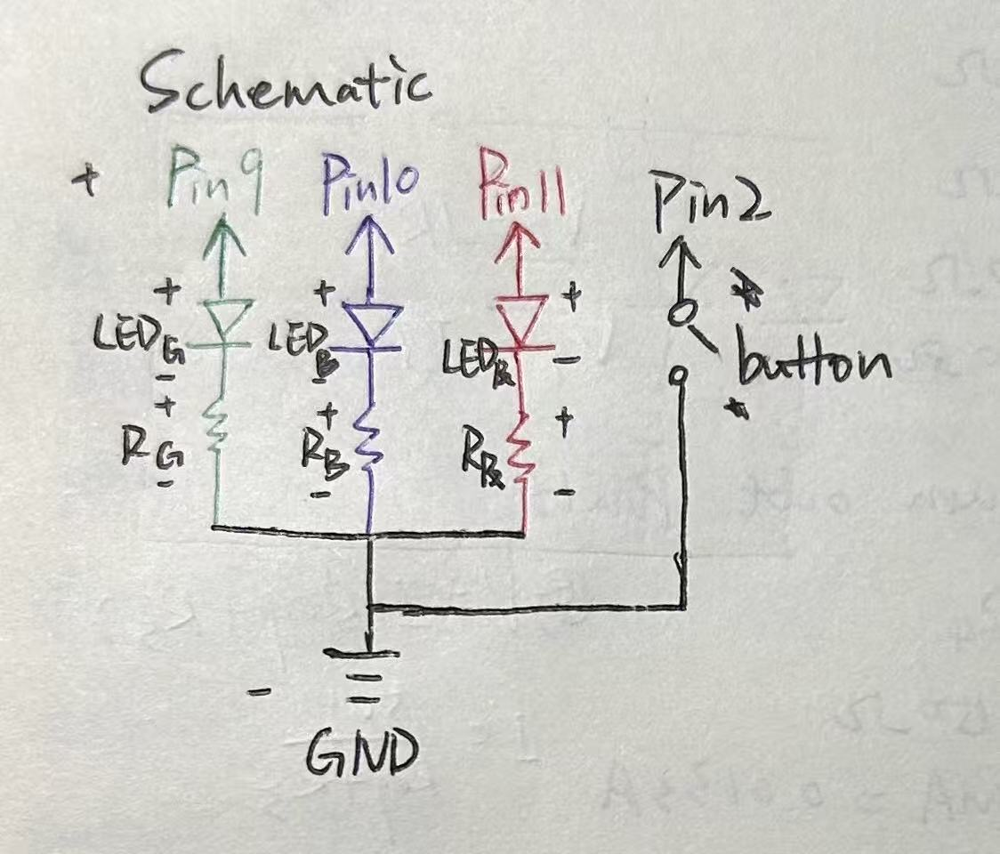
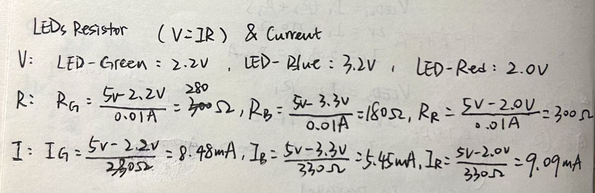
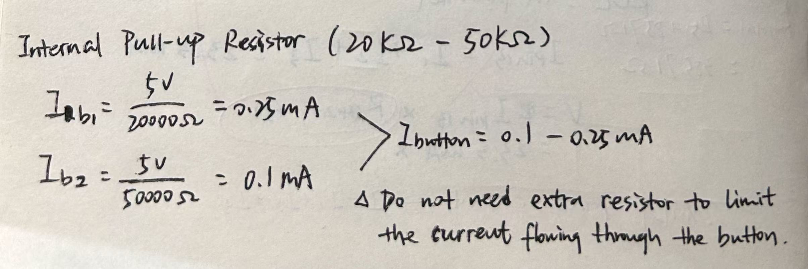
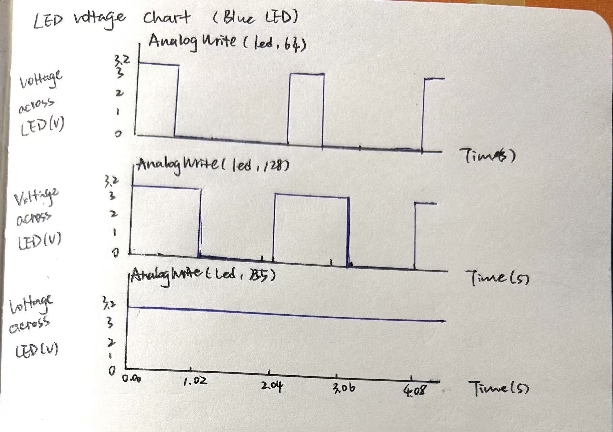
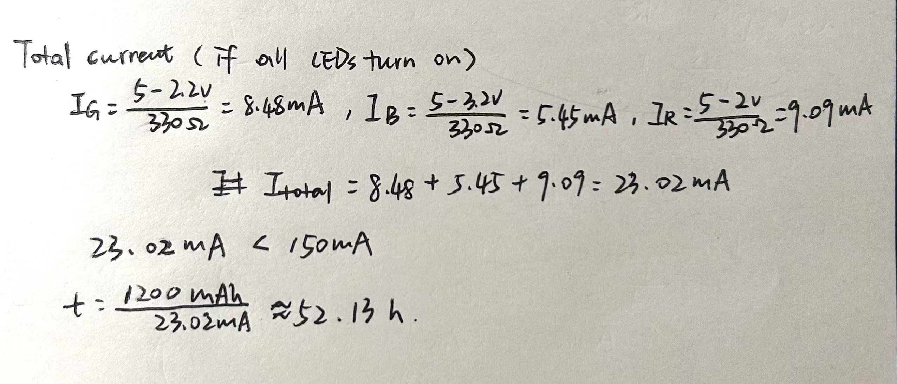
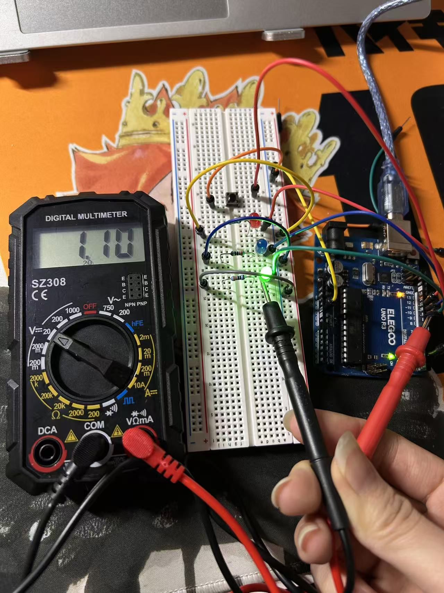

2. Circuit & Operation




In this assignment, I built a light-up toy with a green LED, a blue LED, a red LED, and a button. Each button press changes the LED mode. The project uses digitalRead(), digitalWrite(), analogWrite(), and for loops.


I used Ohm's Law to calculate LED current. Each LED and its resistor are in series, so the current through the resistor is the same as the current through that LED.

I used INPUT_PULLUP for the button. The Arduino internal pull-up resistor is 20 kΩ to 50 kΩ. Therefore, when the button is pressed, the current is only about 0.10 mA to 0.25 mA, so I didn't add an additional external resistor for this button circuit.

This code reads the button with digitalRead(), uses digitalWrite() to control the red and green LEDs, uses analogWrite() and for loops to fade the blue LED.
// define the pins for each LED and the button
// green LED connects with Pin9
const int green = 9;
// blue LED connects with Pin10
const int blue = 10;
// red LED connects with Pin11
const int red = 11;
// button connects with Pin2
const int button = 2;
// count how many times the button is pressed
int pressCount = 0;
// save the last button state
int lastButtonState = HIGH;
void setup() {
// set the green LED as output
pinMode(green, OUTPUT);
// set the blue LED as output
pinMode(blue, OUTPUT);
// set the red LED as output
pinMode(red, OUTPUT);
// set the button as input with a pull-up resistor
pinMode(button, INPUT_PULLUP);
}
void loop() {
// read the button state
int buttonState = digitalRead(button);
// check if the button is just pressed
if (buttonState == LOW && lastButtonState == HIGH) {
// add 1 to the count and repeat 0, 1, 2, 3
pressCount = (pressCount + 1) % 4;
// wait 70ms to reduce button bouncing
delay(70);
}
// save the current button state
lastButtonState = digitalRead(button);
// turn off the green LED
digitalWrite(green, LOW);
// turn off the blue LED
digitalWrite(blue, LOW);
// turn off the red LED
digitalWrite(red, LOW);
// first press: turn on green LED
if (pressCount == 1) {
// turn on the green LED
digitalWrite(green, HIGH);
}
// second press: fade the blue LED
else if (pressCount == 2) {
// increase the brightness from 0 to 255
for (int brightness = 0; brightness <= 255; brightness++) {
// set the blue LED brightness
analogWrite(blue, brightness);
// wait 5ms
delay(5);
}
// decrease the brightness from 255 to 0
for (int brightness = 255; brightness >= 0; brightness--) {
// set the blue LED brightness
analogWrite(blue, brightness);
// wait 5ms
delay(5);
}
}
// third press: turn on red LED
else if (pressCount == 3) {
// turn on the red LED
digitalWrite(red, HIGH);
}
// fourth press: all LEDs turn off
}
The graph shows the voltage across the blue LED over time for analogWrite(led, 64), analogWrite(led, 128), and analogWrite(led, 255). The voltage across the blue LED is approximately 3.2 V when the LED is on.

If all three LEDs are on at the same time, their currents should be added because the three LED branches are in parallel:
Green current = 8.48 mA
Blue current = 5.45 mA
Red current = 9.09 mA
Total current = 8.48 + 5.45 + 9.09 = 23.02 mA
23.02 mA is below the 150 mA total current guideline from class. It is also below the 40 mA for each LED circuit. With a 1200 mAh battery, the ideal operating time is:
1200 mAh / 23.02 mA = 52.13 hours

I measured the voltage across the green LED while it was on and recorded 1.10 V. The theoretical voltage of a green LED is 2.2 V, so the measured value was lower. Forward voltage is not fixed; it can vary because of current, LED manufacturing variation, temperature, and measurement setup.(Explained by Google Search)

I used AI in this assignment. I asked for explanations of
series circuits, LED current calculations, and PWM. AI also suggested
the button-press logic code:
if (buttonState == LOW && lastButtonState == HIGH),
the line pressCount = (pressCount + 1) % 4; to repeat the
count from 0 through 3, and delay(70); to reduce button
bouncing.